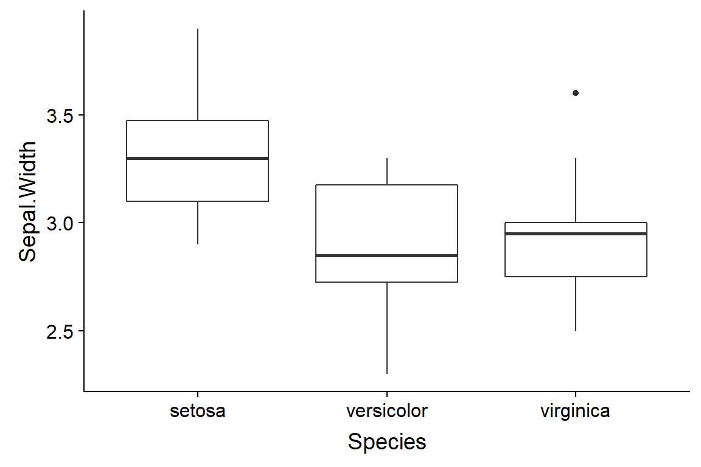
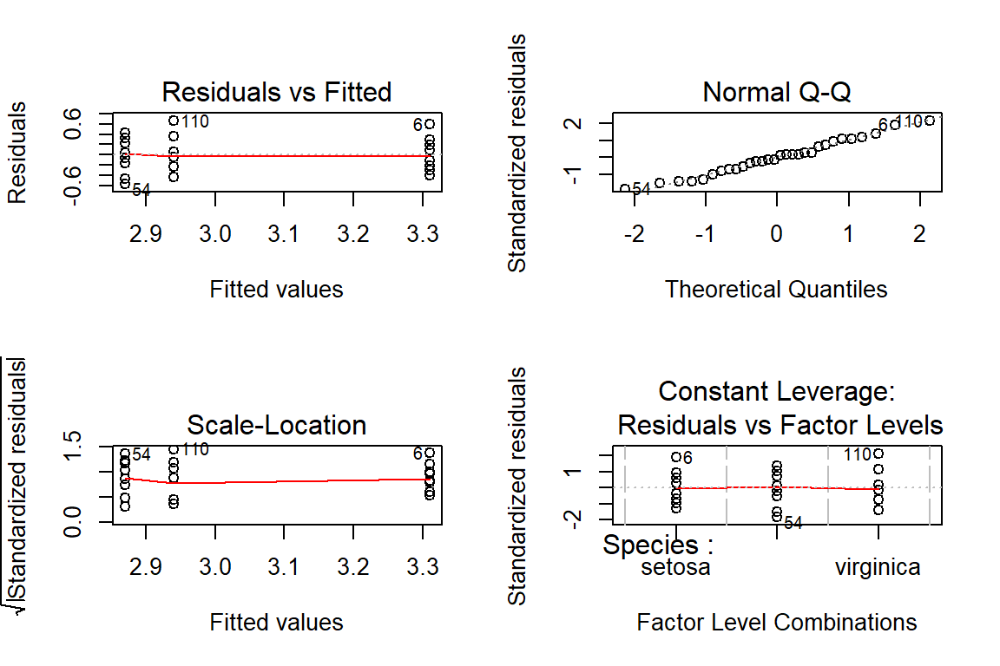
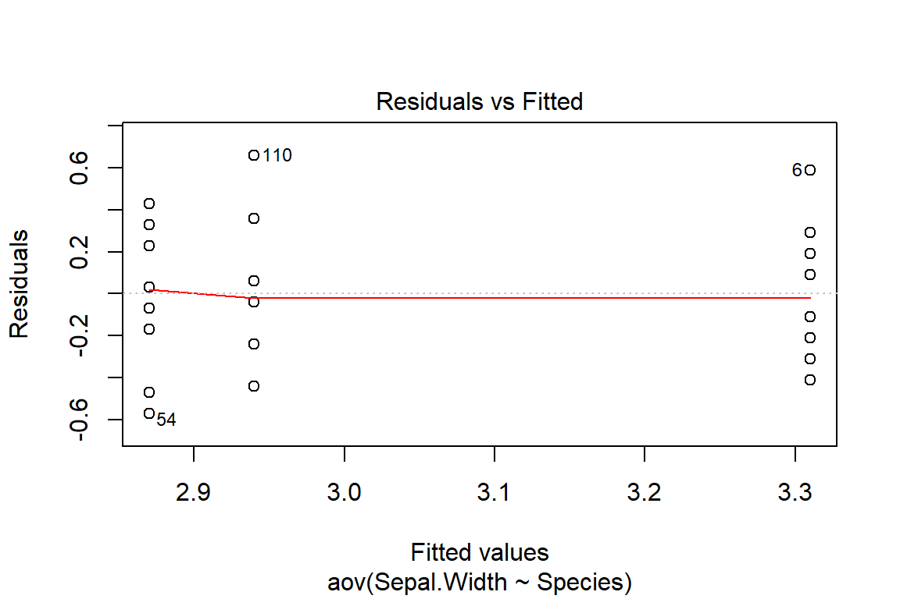
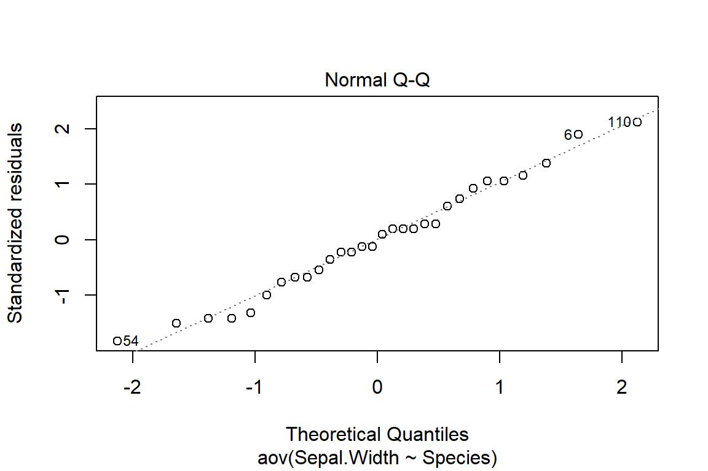
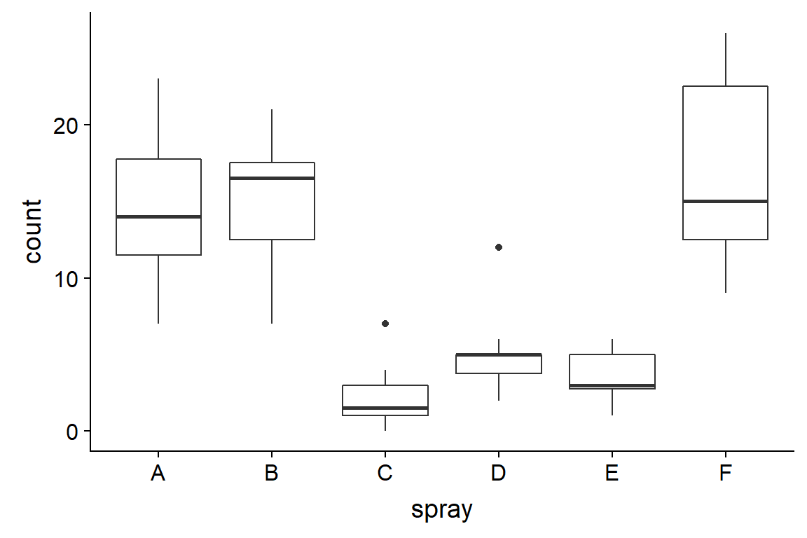
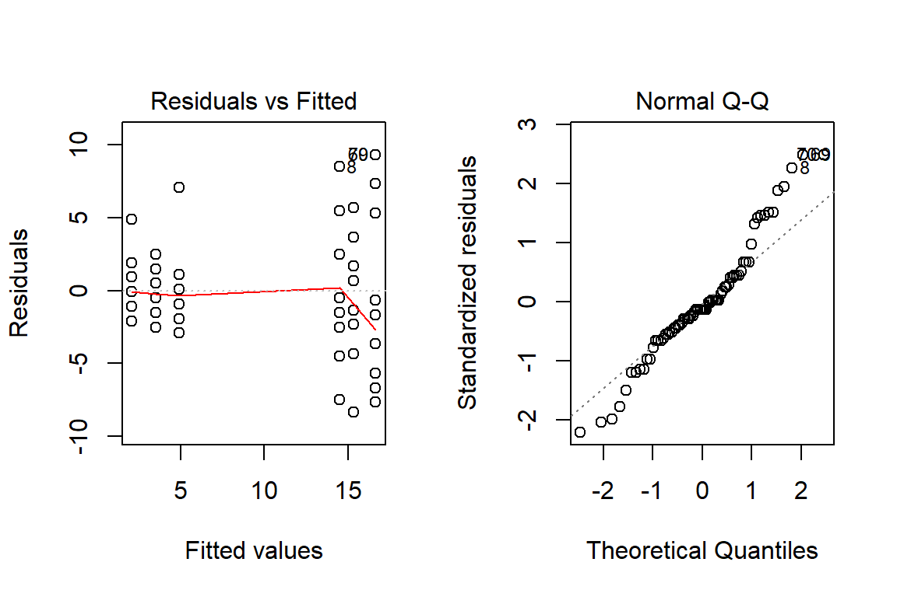
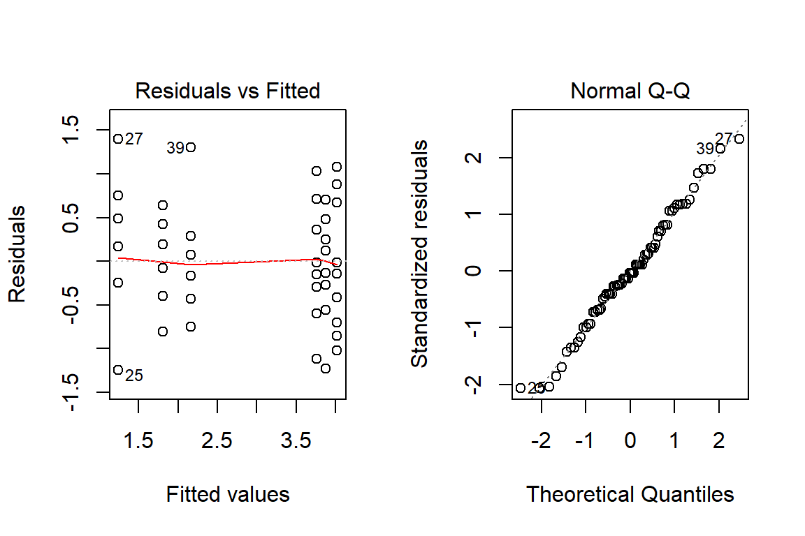
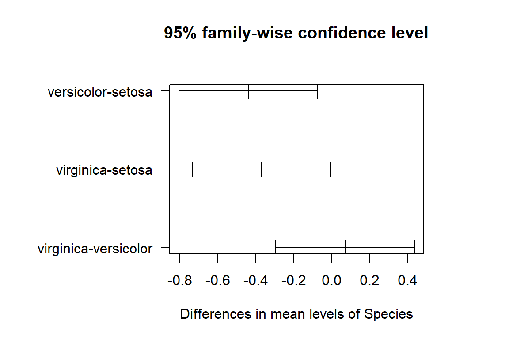

Tableaux de contingence et ANOVA
24 septembre 2018
Plan général
| Réponse catégorielle | Réponse numérique | |
|---|---|---|
| Prédicteur catégoriel | Test du \(\chi^2\) | Test \(t\) (2 catégories) ou ANOVA (plus de 2 catégories) |
| Prédicteur catégoriel ou numérique | Régression logistique | Régression linéaire |
Objectifs
Utiliser le test du \(\chi^2\) pour comparer les fréquences d’une variable catégorielle à une distribution de référence, ou pour tester l’association entre deux variables catégorielles dans un tableau de contingence.
Comprendre le principe de l’analyse de la variance et réaliser une ANOVA à un facteur.
Déterminer les différences significatives entre traitements à partir du test des étendues de Tukey.
Test du \(\chi^2\) de Pearson
Comparer les fréquences d’une variable à une distribution de référence
Exemple
Vérifier si un dé est équilibré avec 100 lancers. Le nombre de fois où chaque nombre a été obtenu est sa fréquence \(f\).
| \(i\) | \(f_i\) |
|---|---|
| 1 | 12 |
| 2 | 17 |
| 3 | 16 |
| 4 | 18 |
| 5 | 11 |
| 6 | 26 |
| Total | 100 |
Comparer les fréquences d’une variable à une distribution de référence
- Hypothèse nulle: Dé est équilibré, donc \(p_i\) = 1/6 pour \(i\) de 1 à 6.
- Fréquence attendue (\(\hat{f_i}\)): probabilité x total de lancers.
| \(i\) | \(f_i\) | \(p_i\) | \(\hat{f_i}\) |
|---|---|---|---|
| 1 | 12 | 1/6 | 16.7 |
| 2 | 17 | 1/6 | 16.7 |
| 3 | 16 | 1/6 | 16.7 |
| 4 | 18 | 1/6 | 16.7 |
| 5 | 11 | 1/6 | 16.7 |
| 6 | 26 | 1/6 | 16.7 |
| Total | 100 |
Calcul du \(\chi^2\)
- Pour une variable avec \(k\) catégories, la statistique \(\chi^2\) (khi-carré) est la somme des déviations entre les fréquences observées et attendue, normalisées par la valeur attendue.
\[ \chi^2 = \sum_{i = 1}^k \frac{(f_i - \hat{f_i})^2}{\hat{f_i}} \]
- Si \(\hat{f_i}\) au moins 5 par catégorie, \(\chi^2\) suit approx. une distribution \(\chi^2\) avec \(k-1\) degrés de liberté.
Distribution \(\chi^2\)

Test du \(\chi^2\)
Calculons la valeur du \(\chi^2\) pour ces données et déterminons avec pchisq la probabilité d’une valeur inférieure ou égale à celle obtenue.
Test du \(\chi^2\)
Calculons la valeur du \(\chi^2\) pour ces données et déterminons avec pchisq la probabilité d’une valeur inférieure ou égale à celle obtenue.
# Données
x <- c(12, 17, 16, 18, 11, 26)
n <- sum(x) # total
# Probabilités théoriques
p <- rep(1/6, 6)
# Calcul du khi2
khi2 <- sum((x - n*p)^2 / (n*p))
khi2## [1] 8.6Test du \(\chi^2\)
pchisq(khi2, df = 5)## [1] 0.8738776Question: Est-ce que notre test est unilatéral ou bilatéral? Quelle est sa valeur \(p\)?
- Il s’agit d’un test unilatéral; si le modèle est inexact, la somme des déviations sera plus grande que prévue. La valeur \(p\) est
1 - pchisq(khi2, df = 5)soit environ 0.126.
Test du \(\chi^2\)
Plutôt que de calculer manuellement la statistique, nous pouvons utiliser la fonction chisq.test.
chisq.test(x, p = p)##
## Chi-squared test for given probabilities
##
## data: x
## X-squared = 8.6, df = 5, p-value = 0.1261Degrés de liberté
La distribution \(\chi^2\), comme la distribution \(t\), dépend du nombre de degrés de liberté.
Degrés de liberté: nombre de données indépendantes utilisées dans le calcul d’une statistique.
Ex.: Le \(\chi^2\) est calculé à partir des déviations entre \(f_i\) et \(\hat{f_i}\) pour \(k\) catégories. Mais comme la somme des déviations doit être égale à 0, il y a \(k - 1\) déviations indépendantes.
Degrés de liberté
- Ex.: Le \(\chi^2\) est calculé à partir des déviations entre \(f_i\) et \(\hat{f_i}\) pour \(k\) catégories. Mais comme la somme des déviations doit être égale à 0, il y a \(k - 1\) déviations indépendantes.
\[ \sum_{i=1}^n f_i = \sum_{i=1}^n \hat{f_i} \] donc \[\sum_{i=1}^n (f_i - \hat{f_i}) = 0\]
Degrés de liberté
- L’estimation de l’écart-type d’un échantillon de taille \(n\) :
\[ s = \sqrt{\frac{1}{n - 1} \sum_{i = 1}^n \left( x_i - \bar{x} \right)^2} \]
a \(n - 1\) degrés de liberté, puisque la somme des écarts à la moyenne est de zéro.
- La statistique \(t\) pour un échantillon, qui est base sur ce calcul de \(s\), a aussi \(n - 1\) degrés de liberté.
Test d’association entre deux variables catégorielles
Tableau de contingence
Exemple
On compte le nombre d’arbres morts et vivants de trois espèces de conifères dans une placette suite à une épidémie de tordeuse des bourgeons de l’épinette.
| ABBA | PIGL | PIMA | |
|---|---|---|---|
| mort | 29 | 11 | 12 |
| vivant | 31 | 29 | 38 |
(ABBA: sapin baumier; PIGL: épinette blanche; PIMA: épinette noire)
- Quelle serait l’hypothèse nulle ici?
Calcul du \(\chi^2\) avec deux variables
\[ \chi^2 = \sum_{i = 1}^r \sum_{j = 1}^c \frac{(f_{ij} - \hat{f_{ij}})^2}{\hat{f_{ij}}} \]
\(r\) et \(c\) réfèrent au nombre de rangées et de colonnes du tableau, respectivement.
Comment déterminer les fréquences attendues \(\hat{f_{ij}}\)?
Calcul du \(\chi^2\) avec deux variables
- Calculons d’abord le total des observations dans chaque rangée et colonne, ainsi que le grand total.
| ABBA | PIGL | PIMA | Total | |
|---|---|---|---|---|
| mort | 29 | 11 | 12 | 52 |
| vivant | 31 | 29 | 38 | 98 |
| Total | 60 | 40 | 50 | 150 |
Nous estimons que la probabilité de la rangée \(i\) est le total de cette rangée (\(N_i\)) divisé par le grand total (\(N\)): \(\hat{p_i} = N_i / N\)
Même chose pour la colonne \(j\): \(\hat{p_j} = N_j / N\)
Calcul du \(\chi^2\) avec deux variables
- La probabilité conjointe de deux variables indépendantes est le produit des probabilités des variables prises séparément.
- Ex.: Pr(sapin ET vivant) = Pr(sapin) x Pr(vivant).
- Donc, sous l’hypothèse nulle, les fréquences attendues sont calculées ainsi:
\[ \hat{f_{ij}} = N p_i p_j = \frac{N_i N_j}{N}\]
Test d’association entre deux variables
Sous l’hypothèse nulle (variables indépendantes), la statistique \(\chi^2\) suit une distribution \(\chi^2\) avec \((r - 1) \times (c - 1)\) degrés de libertés.
Si nous choisissons un seuil de signification \(\alpha = 0.05\), y a-t-il une association significative entre ces variables?
Test d’association entre deux variables
- Sous l’hypothèse nulle (variables indépendantes), la statistique \(\chi^2\) suit une distribution \(\chi^2\) avec \((r - 1) \times (c - 1)\) degrés de libertés.
- Si nous choisissons un seuil de signification \(\alpha = 0.05\), y a-t-il une association significative entre ces variables?
chisq.test(survie)##
## Pearson's Chi-squared test
##
## data: survie
## X-squared = 8.3669, df = 2, p-value = 0.01525Résultat du test d’association dans R
- Fréquences attendues (
khi2$expected) et résidus (khi2$residuals).
khi2 <- chisq.test(survie)
khi2$expected## ABBA PIGL PIMA
## mort 20.8 13.86667 17.33333
## vivant 39.2 26.13333 32.66667Résultat du test d’association dans R
khi2$residuals## ABBA PIGL PIMA
## mort 1.797969 -0.7698235 -1.2810252
## vivant -1.309697 0.5607636 0.9331389- Les résidus correspondent aux déviations normalisées:
\[ \frac{f_{ij} - \hat{f_{ij}}}{\sqrt{\hat{f_{ij}}}} \]
Résultat du test d’association dans R
Excès de sapins morts (résidu positif), donc le taux de mortalité des sapins est plus élevé que prévu par l’hypothèse nulle.
Pour les épinettes, le taux de mortalité est plus faible.
Le rejet de l’hypothèse nulle (indépendance entre la mortalité et l’espèce) ne nous dit pas entre quelles espèces le taux de mortalité varie significativement.
Utilisation des tests du \(\chi^2\)
Le test du \(\chi^2\) doit toujours être réalisé sur les fréquences (nombre d’observations), pas sur les proportions.
Le test devient moins exact pour une petite taille d’échantillon.
Si une des \(\hat{f_{ij}}\) < 5, il est préférable d’utiliser un test qui calcule les probabilités exactes des tableaux de contingence, comme le test de Fisher (
fisher.testdans R).
Test de Fisher pour petits échantillons
tab <- matrix(c(4, 6, 8, 2), nrow = 2)
tab## [,1] [,2]
## [1,] 4 8
## [2,] 6 2chisq.test(tab)## Warning in chisq.test(tab): Chi-squared approximation may be incorrect##
## Pearson's Chi-squared test with Yates' continuity correction
##
## data: tab
## X-squared = 1.875, df = 1, p-value = 0.1709Test de Fisher pour petits échantillons
tab <- matrix(c(4, 6, 8, 2), nrow = 2)
tab## [,1] [,2]
## [1,] 4 8
## [2,] 6 2fisher.test(tab)##
## Fisher's Exact Test for Count Data
##
## data: tab
## p-value = 0.1698
## alternative hypothesis: true odds ratio is not equal to 1
## 95 percent confidence interval:
## 0.01252647 1.65925396
## sample estimates:
## odds ratio
## 0.1841181Analyse de la variance (ANOVA)
Analyse de la variance (ANOVA)
Sert à comparer la moyenne d’une variable entre plusieurs (>2) groupes.
Basée sur le ratio de la variation entre les groupes et de la variation des observations à l’intérieur de chaque groupe.
Hypothèse nulle: les observations de chaque groupe proviennent de populations avec la même moyenne.
Exemple
Prenons les 10 premières observations de chaque espèce dans le jeu de données iris.

Modèle d’ANOVA à un facteur
- On mesure la variable \(y\) pour \(l\) groupes de \(n\) observations.
- Résidu \(\epsilon_{ik}\): Différence entre une observation \(k\) du groupe \(i\) (\(y_{ik}\)) et la moyenne du groupe (\(\mu_i\)).
\[ y_{ik} = \mu_i + \epsilon_{ik} \]
Modèle d’ANOVA à un facteur
\[ y_{ik} = \mu_i + \epsilon_{ik} \]
- On suppose que les résidus sont distribués normalement avec une moyenne de 0 et une écart-type fixe.
\[ \epsilon_{ik} \sim N(0, \sigma) \]
- Hypothèse nulle: \(\mu_i\) est la même pour tous les groupes.
Modèle d’ANOVA à un facteur
- Expression équivalente en fonction de la moyenne globale \(\mu\) et d’effets de groupe \(\alpha_i\).
\[ y_{ik} = \mu + \alpha_i + \epsilon_{ik} \]
- Hypothèse nulle: Tous les \(\alpha_i\) = 0.
Somme des écarts au carré
- Si \(\bar{y}\) est la moyenne de toutes les observations et \(\bar{y_i}\) est la moyenne des observations du groupe \(i\), alors:
\[ \sum_{i = 1}^l \sum_{k = i}^n (y_{ik} - \bar{y})^2 = \sum_{i = 1}^l \sum_{k = i}^n (y_{ik} - \bar{y_i})^2 + \sum_{i = 1}^l \sum_{k = i}^n (\bar{y_i} - \bar{y})^2 \]
- Puisque le dernier terme ne dépend pas de \(k\), on peut ré-écrire l’équation:
\[ \sum_{i = 1}^l \sum_{k = i}^n (y_{ik} - \bar{y})^2 = \sum_{i = 1}^l \sum_{k = i}^n (y_{ik} - \bar{y_i})^2 + \sum_{i = 1}^l n (\bar{y_i} - \bar{y})^2 \]
Somme des écarts au carré
\[ \sum_{i = 1}^l \sum_{k = i}^n (y_{ik} - \bar{y})^2 = \sum_{i = 1}^l \sum_{k = i}^n (y_{ik} - \bar{y_i})^2 + \sum_{i = 1}^l n (\bar{y_i} - \bar{y})^2 \]
SST = SSE + SSA
- SST: Carré de l’écart total (total sum of squares)
- SSE: Carré de l’écart résiduel (error sum of squares)
- SSA: Carré de l’écart des groupes du facteur A
Écarts au carré moyens
On divise chaque somme des carrés par le nombre de degrés de liberté (\(df\)) approprié.
- Pour SST, \(df = nl - 1\) (somme des écarts est zéro).
- Pour SSE, \(df = (n-1)l\) (\(n-1\) écarts indépendants par groupe).
- Pour SSA, \(df = l - 1\).
Tableau d’analyse de la variance
| Composante | Somme des carrés (SS) | Degrés de liberté (df) | Carré moyen (MS) |
|---|---|---|---|
| Facteur A | \(SSA = \sum_{i = 1}^l n (\bar{y_i} - \bar{y})^2\) | \(l - 1\) | \(MSA = \frac{SSA}{l - 1}\) |
| Résidu | \(SSE = \sum_{i = 1}^l \sum_{k = i}^n (y_{ik} - \bar{y_i})^2\) | \((n-1)l\) | \(MSE = \frac{SSE}{(n-1)l}\) |
| Total | \(SST = \sum_{i = 1}^l \sum_{k = i}^n (y_{ik} - \bar{y})^2\) | \(nl - 1\) |
Statistique \(F\)
Modèle d’ANOVA à un facteur
\[ y_{ik} = \mu + \alpha_i + \epsilon_{ik} \]
\[ \epsilon_{ik} \sim N(0, \sigma) \]
La moyenne du carré des résidus (MSE) est un estimateur de la variance \(\sigma^2\).
Si l’hypothèse nulle est exacte, la moyenne du carré des différences de groupe (MSA) est aussi un estimateur de \(\sigma^2\).
Statistique \(F\)
\(MSA = \frac{n}{l-1} \sum_{i = 1}^l (\bar{y_i} - \bar{y})^2\)
La MSA est égale à la variance de \(\bar{y_i}\) multiplée par \(n\).
Si l’hypothèse nulle est vraie, alors la variance de \(\bar{y_i}\) est égale à \(\sigma^2 / n\).
Puisque MSA et MSE estiment la même variance selon l’hypothèse nulle, leur ratio \(F = MSA / MSE\) suit une distribution \(F\) avec degrés de liberté \(d_1 = l - 1\) et \(d_2 = (n-1)l\).
Distribution \(F\)

Statistique \(F\)
Si l’hypothèse nulle est fausse, MSA sera plus élevée par rapport à MSE.
Le test de l’ANOVA est unilatéral: la valeur \(p\) est la probabilité d’un ratio \(F\) égal ou supérieur à celui observé.
Suppositions du modèle d’ANOVA
Les résidus sont indépendants.
Les résidus suivent une distribution normale.
La variance de cette distribution est la même pour chaque groupe.
Suppositions du modèle d’ANOVA
Les résidus sont indépendants.
- L’indépendance des résidus implique que les autres variables qui influençent la réponse sont distribuées de façon semblable dans chaque groupe.
Les résidus suivent une distribution normale.
- Comme le test \(t\), l’ANOVA n’est pas trop sensible aux déviations de la normalité.
La variance de cette distribution est la même pour chaque groupe.
- Contrairement au test \(t\), l’égalité des variances (homoscédasticité) est essentielle.
Échantillon équilibré
Un échantillon équilibré a le même nombre d’observations dans chaque groupe.
Les calculs présentés ici sont seulement valides pour un échantillon équilibré.
Pour les échantillons non-équilibrés dans R, il faut utiliser la fonction de régression linéaire.
Exemples d’ANOVA à un facteur
Largeur des sépales d’iris par espèce
La fonction aov dans R requiert une formule response ~ predicteur et le nom du tableau de données.
anova1 <- aov(Sepal.Width ~ Species, data = iris_ech)
summary(anova1)## Df Sum Sq Mean Sq F value Pr(>F)
## Species 2 1.118 0.5590 5.179 0.0125 *
## Residuals 27 2.914 0.1079
## ---
## Signif. codes: 0 '***' 0.001 '**' 0.01 '*' 0.05 '.' 0.1 ' ' 1- La fonction
summaryaffiche le tableau d’ANOVA.
Graphiques de diagnostic
plot(anova1)
Graphiques de diagnostic
Résidus vs. moyennes estimées: vérifier l’absence de tendance et l’égalité des variances.

Graphiques de diagnostic
Diagramme quantile-quantile: vérifier la normalité.

Coefficients de l’ANOVA (moyennes de groupes)
coef(anova1)## (Intercept) Speciesversicolor Speciesvirginica
## 3.31 -0.44 -0.37(Intercept)est la moyenne du premier groupe (ici, l’espèce setosa).Les autres coefficients indiquent la différence chaque autre groupe et le premier.
- Ex.: La moyenne de l’espèce versicolor est 3.31 - 0.44 = 2.87
Le résultat ne nous dit pas lesquelles de ces différences sont significatives.
ANOVA avec 2 groupes
Avec deux groupes, l’ANOVA est équivalente à un test \(t\).
library(dplyr)
iris_2sp <- filter(iris_ech, Species != "setosa")
anova2 <- aov(Sepal.Width ~ Species, data = iris_2sp)
summary(anova2)## Df Sum Sq Mean Sq F value Pr(>F)
## Species 1 0.0245 0.0245 0.214 0.65
## Residuals 18 2.0650 0.1147coef(anova2)## (Intercept) Speciesvirginica
## 2.87 0.07ANOVA avec 2 groupes
t.test(Sepal.Width ~ Species, data = iris_2sp, var.equal = TRUE)##
## Two Sample t-test
##
## data: Sepal.Width by Species
## t = -0.46212, df = 18, p-value = 0.6495
## alternative hypothesis: true difference in means is not equal to 0
## 95 percent confidence interval:
## -0.3882356 0.2482356
## sample estimates:
## mean in group versicolor mean in group virginica
## 2.87 2.94- La valeur \(p\) et l’estimation des moyennes par espèce sont les mêmes pour les deux tests.
Nombre d’insectes selon l’insecticide
Tableau de données InsectSprays dans R
ggplot(InsectSprays, aes(x = spray, y = count)) +
geom_boxplot()
Graphiques de diagnostic
anova3 <- aov(count ~ spray, InsectSprays)
par(mfrow = c(1, 2))
plot(anova3, which = 1:2)
Nombre d’insectes selon l’insecticide
Variance plus élevée pour les groupes avec une moyenne plus élevées
Caractéristique fréquente des données de comptage
Transformation racine carrée
- Prendre la racine carrée (
sqrt) de la réponse peut rendre les variances plus homogènes.
anova3_racine <- aov(sqrt(count) ~ spray, InsectSprays)
Transformation racine carrée
summary(anova3_racine)## Df Sum Sq Mean Sq F value Pr(>F)
## spray 5 88.44 17.688 44.8 <2e-16 ***
## Residuals 66 26.06 0.395
## ---
## Signif. codes: 0 '***' 0.001 '**' 0.01 '*' 0.05 '.' 0.1 ' ' 1Note: transformation logarithmique n’est pas possible lorsque les données incluent des 0.
Autre option: choisir un modèle non basé sur une distribution normale des résidus (modèle linéaire généralisé).
Comparaisons multiples entre les groupes
Test des étendues de Tukey
Rejet de l’hypothèse nulle de l’ANOVA: improbable que tous les groupes aient la même moyenne.
Ne dit pas entre quels groupes la moyenne diffère significativement.
Test des étendues de Tukey: comme un test \(t\) entre chaque paire de groupes, mais tient compte des comparaisons multiples.
Test des étendues de Tukey
Fonction TukeyHSD (pour Honest Significant Difference) dans R
anova1 <- aov(Sepal.Width ~ Species, data = iris_ech)
tukey1 <- TukeyHSD(anova1)
tukey1## Tukey multiple comparisons of means
## 95% family-wise confidence level
##
## Fit: aov(formula = Sepal.Width ~ Species, data = iris_ech)
##
## $Species
## diff lwr upr p adj
## versicolor-setosa -0.44 -0.8042735 -0.075726495 0.0155401
## virginica-setosa -0.37 -0.7342735 -0.005726495 0.0459626
## virginica-versicolor 0.07 -0.2942735 0.434273505 0.8829240- Il y a une différence significative entre setosa et les deux autres espèces.
Test des étendues de Tukey
- La fonction
plotprésente un graphique des intervalles de confiance du test de Tukey.
plot(tukey1)
Test des étendues de Tukey
Seuil de signification \(\alpha\) fixe la probabilité d’erreur de type I pour l’ensemble des comparaisons.
Chacune des comparaisons doit avoir un seuil \(\alpha\) < 0.05.
Plus on fait de comparaisons, plus la probabilité d’erreur de type II augmente (la puissance diminue).
L’ANOVA a une plus grande puissance que des comparaisons multiples; il est possible de rejeter l’hypothèse nulle puis que
TukeyHSDne détecte aucune différence significative.
Résumé
Test du \(\chi^2\)
Tableau de contingence: tabulation croisée des fréquences de deux variables catégorielles.
Test du \(\chi^2\): comparer une variable catégorielle à une distribution de référence, ou vérifier l’indépendance de deux variables catégorielles.
Si fréquences attendues sont très faibles (< 5), utiliser un test exact comme le test de Fisher.
ANOVA
Vise à déterminer si des échantillons provenant de différents groupes (ex.: traitements) sont distribués avec la même moyenne.
Suppose que les résidus dans chaque groupe sont indépendants et suivent une distribution normale avec la même variance.
Si l’hypothèse nulle est rejetée, le test des étendues de Tukey sert à identifier les différences significatives entre groupes.
Horaire des prochaines semaines
- 26 septembre: Laboratoire à remettre le 3 octobre
- 1er octobre: Cours annulé
- 3 octobre: Cours (ANOVA - suite et régression linéaire)
- 8 octobre: Congé
- 10 octobre: Laboratoire à remettre le 17 octobre